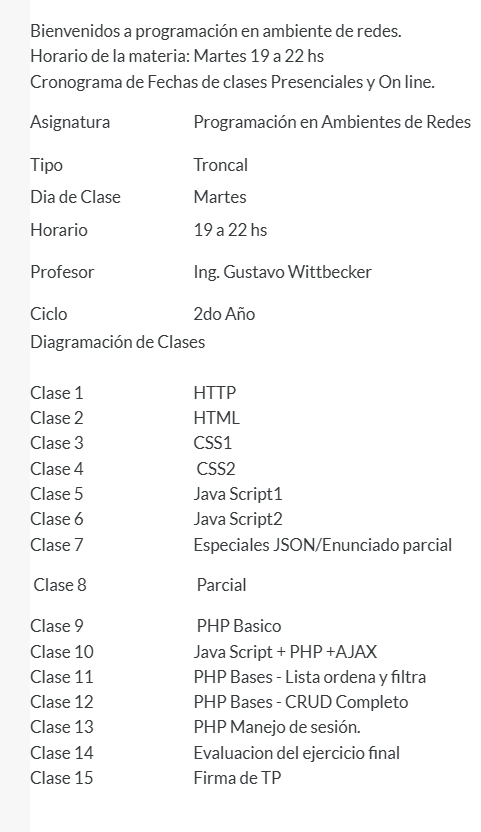

El protocolo HTTP está montado sobre TCP (Transmission Control Protocol), un protocolo de la capa de transporte que garantiza la entrega ordenada y confiable de los datos entre cliente y servidor.
Clientes: Navegadores web (Chrome, Firefox, Safari, Edge), herramientas de consola como CURL, y librerías de lenguajes de programación (Python requests, Node.js fetch, etc.).
Servidores: Apache, Nginx, IIS (Microsoft), Node.js (Express).
Los principales verbos (métodos) HTTP son: GET (obtener recurso), POST (enviar datos), PUT (reemplazar recurso completo), PATCH (modificar parcialmente), DELETE (eliminar recurso), HEAD (solo cabeceras), OPTIONS (opciones disponibles) y CONNECT (túnel TCP).
El body lleva los datos que el cliente envía al servidor. Aparece principalmente en solicitudes POST y PUT. Puede contener formularios HTML (application/x-www-form-urlencoded o multipart/form-data), JSON (application/json), XML, texto plano o archivos binarios. Los requests GET típicamente no llevan body.
Un URI (Uniform Resource Identifier) es un identificador genérico de cualquier recurso. Un URL (Uniform Resource Locator) es un tipo de URI que además especifica cómo localizar el recurso, incluyendo el protocolo y la ubicación (ej: https://www.ejemplo.com/pagina). Todo URL es un URI, pero no todo URI es un URL.
La información se almacena en caché. El servidor indica mediante headers como Cache-Control, ETag, Last-Modified y Expires cómo y cuánto tiempo debe guardarse la respuesta. El cliente o proxies intermedios guardan copias para evitar solicitudes repetidas al servidor.
En HTTP/1.1 se introdujo la conexión persistente (keep-alive): en lugar de abrir y cerrar una conexión TCP por cada request, la misma conexión se reutiliza para múltiples solicitudes. Esto reduce la latencia y el overhead del handshaking repetido.
Es la técnica que permite que un único servidor físico (con una sola IP) aloje múltiples sitios con distintos dominios. El servidor identifica a cuál sitio responder usando el header Host que el cliente envía en cada solicitud HTTP.
ETag (Entity Tag) es un identificador único que el servidor asigna a una versión específica de un recurso. Cuando el cliente vuelve a pedirlo, envía el ETag en el header If-None-Match. Si el recurso no cambió, el servidor responde con 304 Not Modified sin enviar el cuerpo, ahorrando ancho de banda.
Porque cada solicitud HTTP es completamente independiente de las anteriores. El servidor no guarda ningún estado ni memoria de interacciones previas. Para mantener estado (sesiones de usuario) se utilizan mecanismos adicionales como cookies, tokens JWT o variables de sesión en servidor.
HTTP/2 y más recientemente HTTP/3. HTTP/2 introduce multiplexación (múltiples requests en paralelo por una sola conexión TCP) y compresión de headers. HTTP/3 reemplaza TCP por QUIC (sobre UDP), eliminando el head-of-line blocking y mejorando la velocidad especialmente en conexiones inestables.
Principalmente gracias a HTTP/3 y QUIC. En TCP, un paquete perdido bloquea toda la conexión (head-of-line blocking). En QUIC, cada stream es independiente, por lo que la pérdida de un paquete solo afecta ese stream. Además QUIC implementa reconexión más rápida y reduce los handshakes iniciales con 0-RTT, mejorando notablemente la experiencia en redes con alta latencia o pérdida de paquetes.
